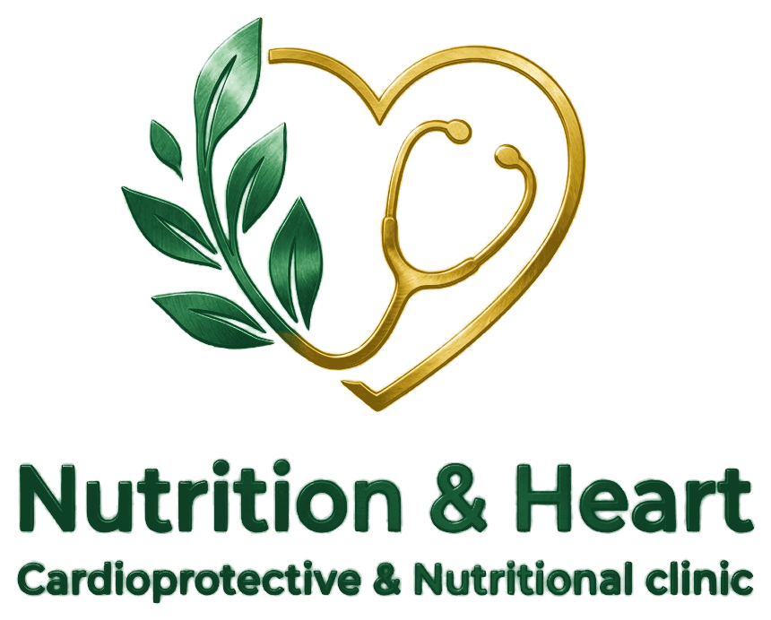

A healthy heart is built at the table, on the move and in daily habits.
Clear, practical guidance from a consultant cardiologist and nutrition specialist on protecting your heart and body through what you eat, how you move and how you live.

What one portion of each group looks like
Carbohydrates, protein and fat come from different food groups. These guides show how much counts as one portion, using household measures. Tap a guide to enlarge it.
What you eat every day matters more than any single food
A pattern rich in vegetables, fruit, whole grains, legumes, fish and nuts, with olive oil as the main fat, is linked to lower rates of heart disease. These are the daily limits and targets most guidelines share.
Eat more of
- Vegetables, fruit and leafy greens, fresh or frozen
- Whole grains such as oats, brown rice and whole wheat bread
- Beans, lentils and chickpeas
- Fish twice a week, including oily fish such as sardines and mackerel
- Unsalted nuts and seeds
- Olive oil as your main cooking and dressing fat
Go easier on
- Salt, stock cubes, pickles and salty processed foods
- Fried food, fast food and packaged snacks
- Sugary drinks, juices and sweets
- Processed meats and fatty red meat
- Refined white bread, white rice and pastries
- Large portions, especially late at night
A heart-friendly plate
A simple way to build lunch and dinner without counting anything.
Regular movement is medicine for the heart
Physical activity lowers blood pressure, improves cholesterol and blood sugar, supports a healthy weight and strengthens the heart muscle. Some activity is always better than none.
Sit less
Long hours of sitting raise heart risk even in people who exercise. Stand up and walk for a few minutes every hour.
Start gently
If you have heart disease, high blood pressure, symptoms, or have not exercised for years, speak to your doctor before you begin and build up slowly.
Step-by-step guides in English and Arabic, with no equipment, bands or dumbbells.
Daily habits that protect your heart
Do not smoke
There is no safe level of tobacco. Quitting lowers your heart attack and stroke risk, and the benefit begins within months. Ask for help: medication and counselling double the chance of success.
Sleep 7 to 9 hours
Short or broken sleep is linked to high blood pressure, weight gain and diabetes. Keep regular sleep and wake times, and tell your doctor if you snore loudly or stop breathing at night.
Manage stress
Long-term stress pushes up blood pressure and often leads to poor eating and less movement. Walking, breathing exercises, time with family and friends, and asking for support all help.
Keep alcohol low
Alcohol raises blood pressure and can trigger irregular heart rhythms. If you do not drink, do not start. If you do, less is better.
Aim for a healthy weight
Extra weight around the waist is especially harmful to the heart. Losing even 5 to 10 percent of your body weight can improve blood pressure, cholesterol and blood sugar.
Take medicines as prescribed
Lifestyle works alongside treatment, not instead of it. Do not stop blood pressure, cholesterol or diabetes medicines without talking to your doctor.
Know the numbers that describe your heart risk
High blood pressure and high cholesterol usually cause no symptoms, so the only way to find them is to measure. Your targets depend on your age, medical history and overall risk, so ask your doctor what yours should be.
When to get urgent help
Call your local emergency number straight away for chest pain, pressure or tightness, pain spreading to the arm, jaw or back, sudden shortness of breath, fainting, or sudden weakness or trouble speaking. Do not wait for it to pass.
Your cardiologist and nutrition specialist
Dr Mora Magdy Ghaly combines heart care with practical nutrition, helping patients protect their hearts through what they eat, how they move and how they live.
- MD in cardiovascular disease, Assiut University
- Nutrition diploma, American University in Cairo (AUC)
- Works at Assiut Police Hospital
Get a plan made for you
A consultation covers your heart risk, your eating and activity habits, and a written plan you can follow from the same day.